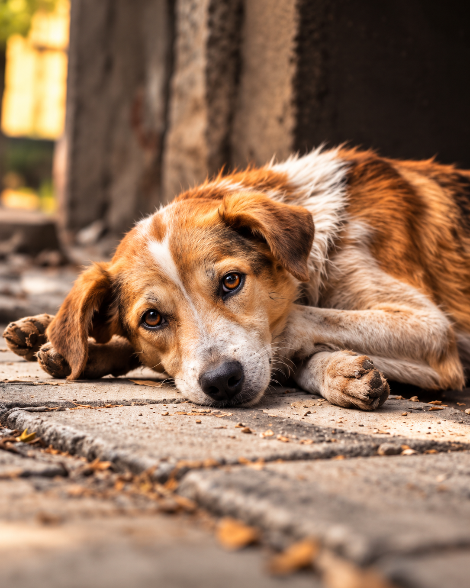
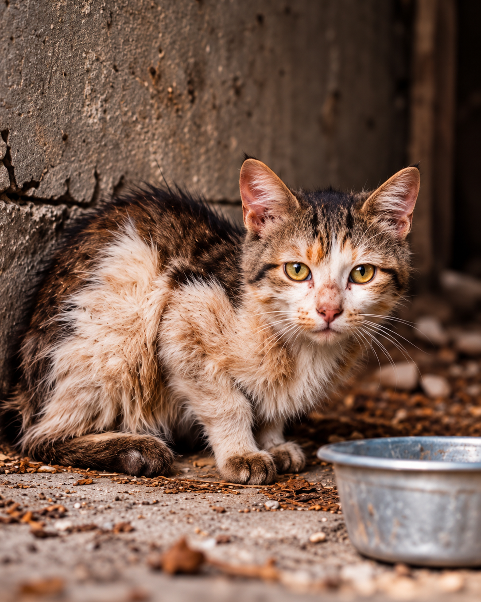
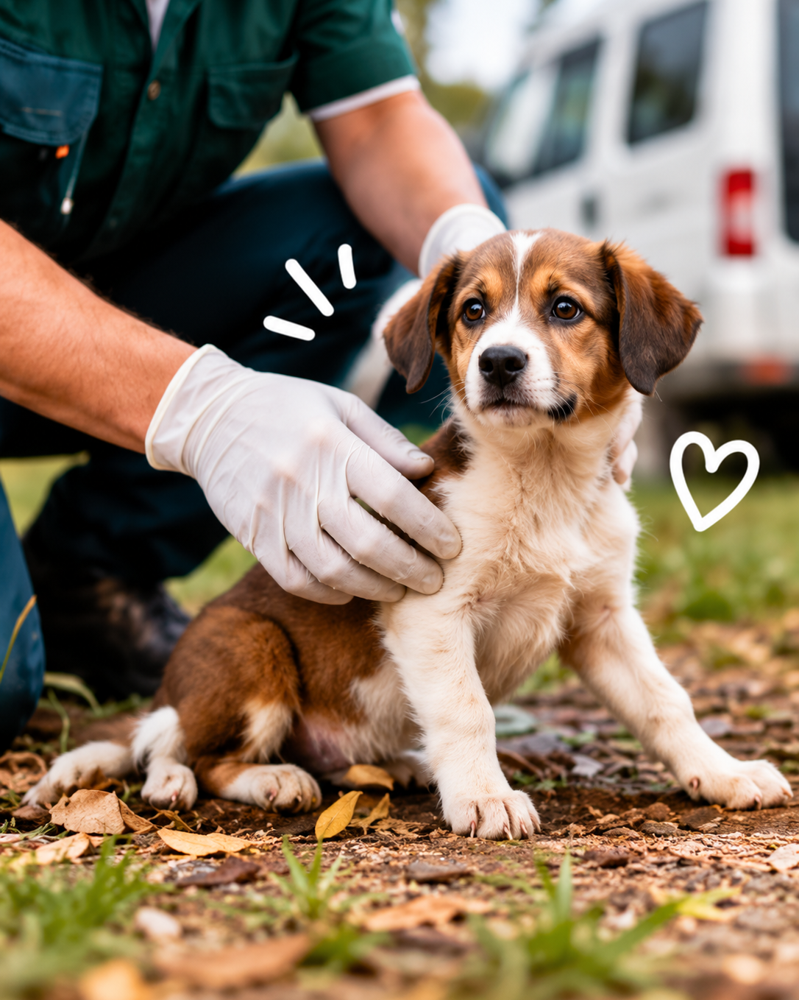
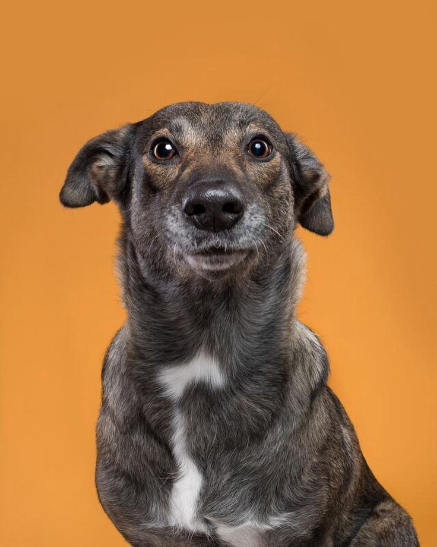
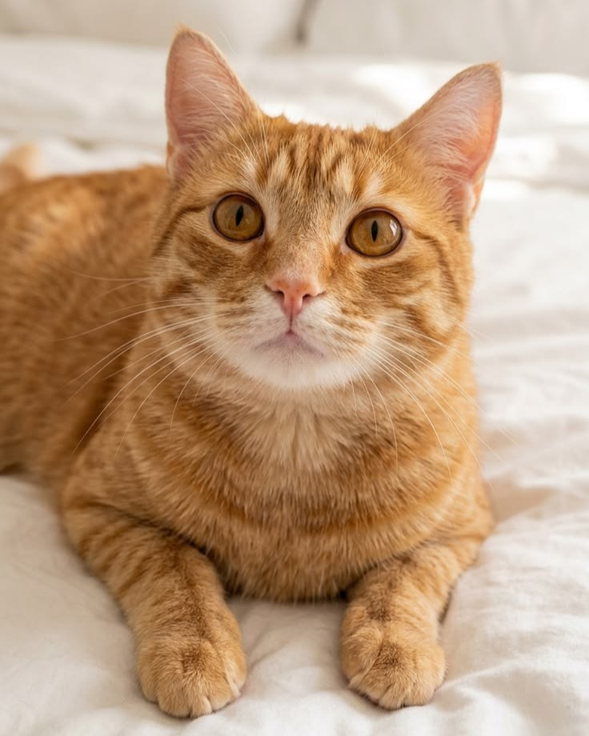
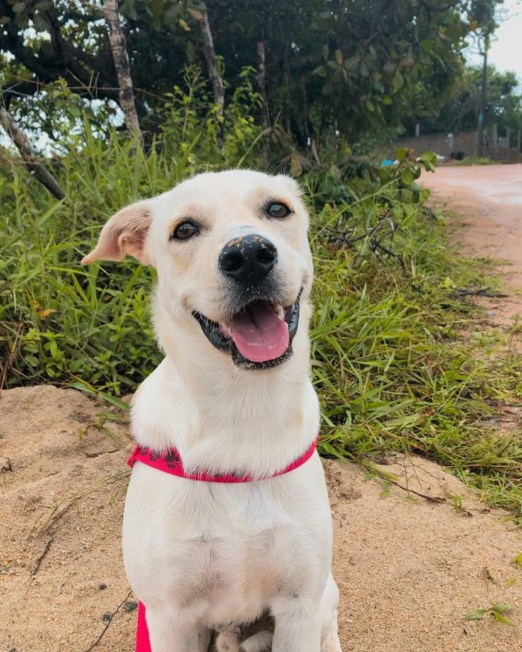
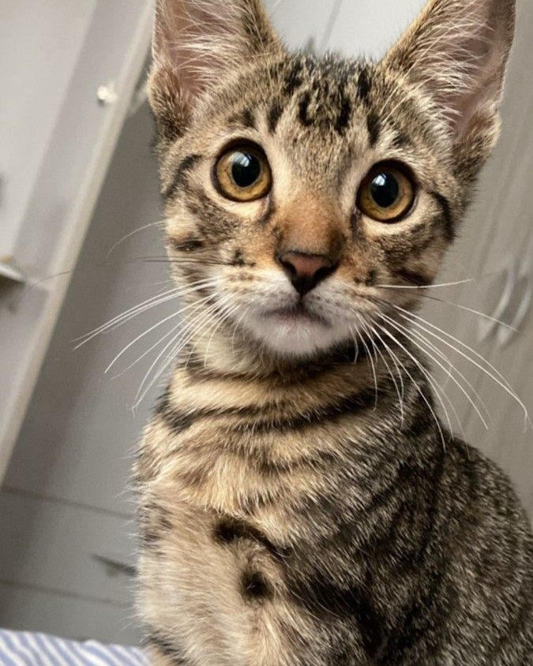
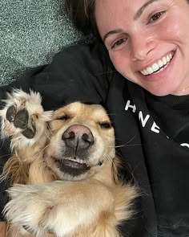
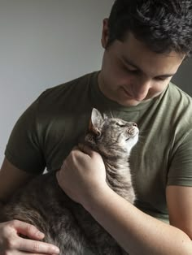

Denuncie e ajude a salvar vidas!
Se você presenciar um animal abandonado, em situação de maus-tratos ou que precise de resgate, faça sua denúncia! Juntos podemos garantir mais proteção e cuidado aos animais da nossa cidade e região.
Como denunciar
Juntos por mais proteção animal
Como denunciar
Acesse o formulário (Forms) que disponibilizamos acima ("formulário denúncia"), preencha as informações, adicione fotos ou vídeos do local e envie. Sua denúncia é essencial para que possamos agir!Saiba mais

Animal em situação de rua
Denuncie animais que estão abandonados, sem tutor, vivendo nas ruas, sem abrigo, sem alimentação ou em condições de risco.Saiba mais

Maus-tratos
Denuncie casos de agressão, falta de alimentos, falta de cuidados veterinários, animais presos em locais inadequados ou qualquer forma de violência contra animais.Saiba mais

Resgate e atendimento
Ao recebermos a sua denúncia, avaliamos a situação e acionamos os órgãos responsáveis para o resgate, encaminhamento e atendimento adequado do animal.Saiba mais
Adoção
Encontre seu novo melhor amigo!

Bingo (macho)
Bingo é um cão muito carinhoso, brincalhão e adora fazer novos amigos. Foi resgatado e agora está pronto para um novo lar cheio de amor. Bingo tem 2 anos, porte médio e já está vacinado!Quero adotar

Mia (fêmea)
Mia é uma gatinha meiga, curiosa e muito carinhosa. Foi resgatada e agora procura um lar seguro. Mia tem 1 ano, porte pequeno e já está vacinada.Quero adotar

Pipoca (fêmea)
Pipoca é uma cachorrinha cheia de energia, carinhosa e ama brincar. Foi resgatada em situação de abandono e está pronta para fazer parte de uma nova história! Pipoca tem 6 meses, porte médio e já está vacinada.Quero adotar

Tom (macho)
Tom é um gatinho dócil, tranquilo e esperto. Foi encontrado na rua e agora busca uma família que lhe dê todo o cuidado e atenção. Tom tem 1 ano, porte pequeno e já está vacinado.Quero adotar

Vidas salvas
Cada resgate é uma história de esperança!

Letícia Souza - Animal resgatado
"Encontrei um cachorrinho abandonado, muito magro e assustado. Fiz a denúncia informando a localização e enviando fotos. Meu caso foi encaminhado para o atendimento e o animal recebeu os cuidados necessários. Me apaixonei por ele e adotei. Se chama Téo"

Carlos Mendeiros - Resgate de animal ferido
"Encontrei um gatinho machucado na rua e não sabia como ajudá-lo. Fiz a denúncia pelo formulário e expliquei a situação. O gatinho teve o apoio de responsáveis especializados e teve uma nova chance de viver! Foi emocionante!"